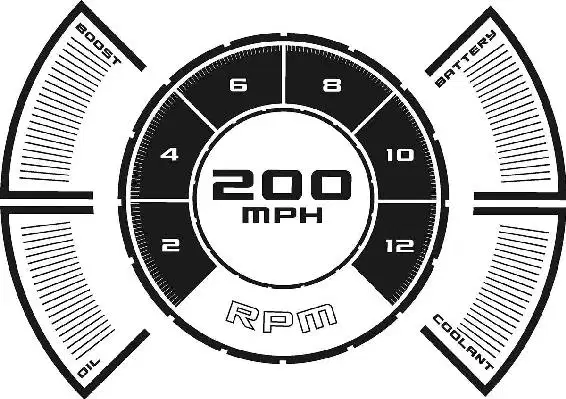

“This here is Bessie,” Doc said as he showed Lightning the massive piece of heavy machinery. She was steaming and dripping, and she was covered by a thick layer of tar. “Finest road-pavin’ machine ever built,” Doc announced. “I’m hereby sentencing you to community service. You’re gonna fix the road under my supervision.”
“What?” Lightning demanded, completely repulsed. “This place is crazy.”
“Hey,” Mater whispered, leaning in close to Lightning. “I know this might be a bad time right now, but you owe me thirty-two thousand dollars in legal fees.”
“What?” Lightning cried.
“So we’re gonna hitch you up to sweet Bessie,” Doc went on, “and you’re gonna pull her nice.”
“You gotta be kidding me!” Lightning complained. He couldn’t believe it. Did this old lemon seriously expect a flashy race car like Lightning McQueen to haul around a tub of junk like Bessie? As far as punishment went, this was cruel and unusual. “How long is this gonna take?”
“Well,” Doc said thoughtfully, “if a fella does it right, should take him about five days.”
“Five days?” Lightning cried. An image of Chick chatting up the folks at Dinoco flashed through his mind. “But I should be in California schmoozing Dinoco right now!”
“Then if I were you,” Doc shot back, “I’d quit yappin’ and start workin’. Hook him up, Mater.”
“Okey-dokey.” The tow truck rolled forward to attach Lightning to Bessie. But the minute he removed Lightning’s parking boot—zoom!
“Freedom!” Lightning shouted loudly as he zipped away. “Woo-hoo! California, here I come!” He pressed the accelerator, shooting toward the WELCOME TO RADIATOR SPRINGS billboard. But suddenly, he coughed. Then he sputtered. “No. No, no, no,” Lightning cried as he slowed to a stop. “Out of gas? How can I be out of gas?”
“Boy,” Sheriff said as he and Sally rolled out from behind the billboard, “we ain’t as dumb as you think we are.”
“We siphoned your gas while you were passed out,” Sally added. She could hardly hide her grin. “Ka-chow!”
Sheriff joined Sarge and Fillmore, who were having a quart of oil at Flo’s and watching Lightning haul Bessie over the road. Red was tending to some flowers near the tire shop while Luigi fiddled with his tire tower.
“Red, can you move over?” old Lizzie croaked from the porch of her souvenir shop. “I want to get a look at that sexy hot rod!”
“You know, I used to be a pretty good whistler,” Mater said to Lightning as the rookie race car struggled to haul Bessie. Lightning inched along, gagging on fumes from the tar. “I can’t do it now, of course,” Mater went on, “on account of sometimes I get fluid built up in my engine block, but Doc said he’s gonna fix it, though. He can fix about anything. That’s why we made him the judge. Boy, you shoulda heard me on the song ‘Giddy Up Oom Papa Mow-Mow.’ Now, I’m not one to brag, but people come pretty far to see me get low on the ‘mow-mow.’”
Bessie let out a squirt of tar. It landed all over Lightning’s lightning bolt sticker.
“Aw, man, that’s just great. My lucky sticker’s all dirty,” Lightning griped. “Hey!” he called to the fire truck.
Red looked up from his flowers.
“Yeah, you in the red!” Lightning went on. “I could use a little hose down. Help me wash this off.”
Red darted into the firehouse garage.
“Where’s he going?” Lightning asked.
“Oh, he’s just a little bit shy,” Mater explained.
“And he hates you for killing his flowers.”
“I shouldn’t have to put up with this,” Lightning grumbled angrily. “I am a precision instrument of speed and aerodynamics.”
Mater looked blank. “You hurt your what?”
“I’m a very famous race car!” Lightning shouted.
“You are a famous race car?” Luigi cried, brightening. “I must scream to the world my excitement from the top of someplace very high! Do you know many Ferraris?”
“No,” Lightning admitted. “They race on the European circuit. I’m in the Piston Cup—”
The little Italian import was unimpressed. “Luigi follow only the Ferraris,” he interrupted. Then he drove off, leaving Lightning still strapped to Bessie.
Just then, two minivans appeared on the horizon, heading into town.
“Customers, everyone!” Sally cried. “It’s been a long time; just remember what we rehearsed. You all know what to do.”
The town sprang into action, taking their places in front of their shops and flipping over their OPEN signs.
“I just don’t see any on-ramp anywhere,” Mrs. Mini Van pointed out. She and her husband bumped awkwardly over the broken road. They were looking for the Interstate.
“I know exactly where we are,” Mr. Mini Van insisted, even though he didn’t.
“Hello!” Sally chirped as she raced to welcome the motorists. “Welcome to Radiator Springs, gateway to Ornament Valley, legendary for its quality service and friendly hospitality. How can we help you?”
“We don’t need anything,” Mr. Mini Van said, “thank you very much.”
“Oh, honey, ask for directions to the Interstate,” Mrs. Mini Van begged. Her husband ignored her.
“What you really need is the sweet taste of my homemade organic fuel,” Fillmore suggested.
“We’re just trying to find the Interstate,” Mrs. Mini Van explained.
“Good to see you, soldier,” barked the old jeep. “Come on by Sarge’s Surplus Hut.”
“I do have a map over at the Cozy Cone Motel,” Sally told the couple helpfully. “And if you do stay, we offer a free Lincoln Continental breakfast.”
“I don’t need a map,” Mr. Mini Van said stubbornly. “I have the GPS.”
Flo offered them fuel. Luigi suggested that they get some new tires. Ramone even tried to sell the lost couple a flashy new paint job.
But the travelers weren’t interested. In fact, all the attention made them drive a little faster to get out of Radiator Springs.
“Come back soon, okay?” Sally called as the couple sped off. “I mean, you know where we are. Tell your friends.”
“Pssst. Pssst.” Lightning gestured to the couple as they neared the edge of town. “Hey—I know how to get to the Interstate.”
“Oh, do you?” Mrs. Mini Van asked as she came to a stop.
“No,” Lightning admitted, “not really, but listen. I’m Lightning McQueen, the famous race car. I’m being held here against my will and I need you to call my team so they can come rescue me and get me to California in time for me to win the Piston Cup!”
The Mini Vans exchanged nervous glances. This car sounded crazy.
“Gotta be goin’ now,” Mr. Mini Van said quickly. “Okay, bye-bye!”
Now Lightning was desperate.
“No, no, no!” Lightning begged. Now he really sounded insane. But what else could he do? He didn’t care if he sounded out of his mind. The thought of staying in Radiator Springs was making him crazy!
He yelled after the Mini Vans, “It’s the truth! I’m telling you, you gotta help me!”
But the Mini Vans took off without checking their rearview mirrors.
